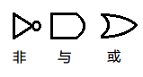
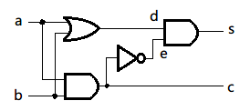
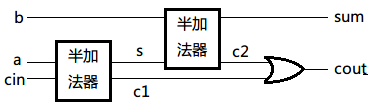
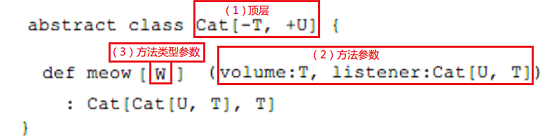
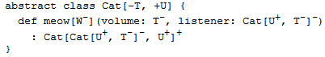

类似于JavaBean的getter和setter方法，Scala对象的非私有var x有自动生成的访问方法
x和设值方法x_=。
对于类中的字段：
var hour = 12
会有额外的getter方法hour和setter方法hour_=。方法的访问性与字段一致。
拿这个例子来说：
class Time {
var hour = 12
var minute = 0
}
和下面的代码是一样的：
class Time {
private[this] var h = 12
private[this] var m = 0
def hour: Int = h
def hour_=(x: Int) { h = x }
def minute: Int = m
def minute_=(x: Int) { m = x }
}
所以可以直接定义getter和setter。
下面的代码在setter前进行检查：
class Time {
private[this] var h = 12
private[this] var m = 12
def hour: Int = h
def hour_= (x: Int) {
require(0 <= x && x < 24)
h = x
}
def minute = m
def minute_= (x: Int) {
require(0 <= x && x < 60)
m = x
}
}
再看一个温度的例子：
class Thermometer {
var celsius: Float = _
def fahrenheit = celsius * 9 / 5 + 32
def fahrenheit_= (f: Float) {
celsius = (f - 32) * 5 / 9
}
override def toString = fahrenheit +"F/"+ celsius +"C"
}
注意：变量celsius的值为_，表示初始化值。对于数值代表0，对于布尔类型代表
false，引用类型则代表null。
Scala中的初始化器=_，如果写成：
var celsius
这样就成了抽象变量（以后到了“抽象成员”这一章介绍），而不是一个没有初始化的变量。 这个和Java的习惯很不一样。
使用的例子：
scala> val t = new Thermometer t: Thermometer = 32.0F/0.0C scala> t.celsius = 100 scala> t res3: Thermometer = 212.0F/100.0C scala> t.fahrenheit = -40 scala> t res4: Thermometer = -40.0F/-40.0C
来个SICP（Structure and Interpretation of Computer Programs，计算机程序的构造与 解释）里的例子。

为了实现这三种基本的门，我们建立一个Wire类代表线路。可以这样构造线路：
val a = new Wire val b = new Wire val c = new Wire
或简洁地写成：
val a, b, c = new Wire
三个基本的门电路由以下三个过程模拟：
def inverter(input: Wire, output: Wire) def andGate(a1: Wire, a2: Wire, output: Wire) def orGate(o1: Wire, o2: Wire, output: Wire)
注意这里的过程都没有返回值。按照函数式的思想，应该是返回构造好的门对象。但是在
这里我们选择了没有返回值，而是通过副作用来模拟门电路。副作用让一步步渐进地构造
复杂的电路更加容易，如inverter(a,b)在a与b之间放置反转电路。
还有这里的方法名没有用动词而是用了名词，这是为了方便说明制造的是哪个门电路。这 反映了DSL说明的本质：应该描述电路，而不是如何制造它。
下面是一个半加法器（half-adder）。它根据两个输入a和b产生累加和s。
累加的定义为：s= (a+b)%2及进位c，其中的c = (a+b)/2。
半加法器电路图：

用我们的代码描述：
def halfAdder(a: Wire, b: Wire, s: Wire, c: Wire) {
val d, e = new Wire
orGate(a, b, d)
andGate(a, b, c)
inverter(c, e)
andGate(d, e, s)
}
接下来是一个全加法器，定义为根据参数a和b还有进位cin得到两个输出。一个是和
sum = (a+b+cin)%2，另一个是进位输出count = (a+b+cin)/2：

代码为：
def fullAdder(a: Wire, b: Wire, cin: Wire,
sum: Wire, cout: Wire) {
val s, c1, c2 = new Wire
halfAdder(a, cin, s, c1)
halfAdder(b, s, sum, c2)
orGate(c1, c2, cout)
}
这是内部DSL很好的例子：通过宿主语言将特定的语言定义为库面不是完全实现这种语言。
完成了对电路的模拟以后，再来分析对时间的模拟。模拟时间包括在指定时间执行指定的 动作。
私有变量保存时间，但提供对时间的公开访问：
private var curtime: Int = 0 def currentTime: Int = curtime
定义动作：在我们的例子中，把参数列表和返回都为空的过程() => Unit作为基本的动作
。给这样类型的过程起个别名叫Action：
type Action = () => Unit
在特定时间执行的的操作定义为工作项目（work item）：
case class WorkItem(time: Int, action: Action)
注意这里用的是样本类，所以用工厂方法创建实例就可以自动获得访问构造器参数time和
action的方法。
还有一个类来保存末执行工作条目的排程表（agenda），注意它是按时间排序的：
private var agenda: List[WorkItem] = List()
提供在一定 时延后加入新的工作条目的方法，注意加入操作也要排序：
def afterDelay(delay: Int)(block: => Unit) {
val item = WorkItem(currentTime + delay, () => block)
agenda = insert(agenda, item)
}
private def insert(ag: List[WorkItem],
item: WorkItem): List[WorkItem] = {
if (ag.isEmpty || item.time < ag.head.time) item :: ag
else ag.head :: insert(ag.tail, item)
}
核心是run方法：
def run() {
afterDelay(0) {
println("*** simulation started, time = "+
currentTime +" ***")
}
while (!agenda.isEmpty) next()
}
private def next() {
(agenda: @unchecked) match {
case item :: rest =>
agenda = rest
curtime = item.time
item.action()
}
}
注意这里为了方便去掉了空列表的情况。为了防止编译器警告我们在模式匹配里故意漏掉了列表为空的情况，在
这里使用了(agenda: @unchecked) match而不是agenda match。
完整的代码在包org.stairwaybook.simulation里：
abstract class Simulation {
type Action = () => Unit
case class WorkItem(time: Int, action: Action)
private var curtime = 0
def currentTime: Int = curtime
private var agenda: List[WorkItem] = List()
private def insert(ag: List[WorkItem],
item: WorkItem): List[WorkItem] = {
if (ag.isEmpty || item.time < ag.head.time) item :: ag
else ag.head :: insert(ag.tail, item)
}
def afterDelay(delay: Int)(block: => Unit) {
val item = WorkItem(currentTime + delay, () => block)
agenda = insert(agenda, item)
}
private def next() {
(agenda: @unchecked) match {
case item :: rest =>
agenda = rest
curtime = item.time
item.action()
}
}
def run() {
afterDelay(0) {
println("*** simulation started, time = "+
currentTime +" ***")
}
while (!agenda.isEmpty) next()
}
}
这里创建了BasicCircuitSiomulation来模拟电路。
为了模拟电路和延迟声明了三个方法：InverterDelay、AndGateDelay、OrGateDelay。由于
不同模拟电路的技术参数不同，所以这三个方法是抽象方法。
需要支持的三种基本动作：
getSignal: Boolean：返回当前线路上的信号。
setSignal(sig: Boolean)：设置线路信号。
addAction(p: Action)：添加动作到线路上。基本思想是所有附加在某线路上的动作过程在每次信号改变
时被执行。通过连接组件可以为线路添加该组件的功能。加上的动作会在被加到线路时以及每次线路信号改变时
被执行。
实现代码sigVal代表当前信号，actions是附加的动作过程。需要注意的是setSignal方法，当信号
改变时，新的信号首先被保存在变量sigVal中，然后执行所有线路附加动作：
class Wire {
private var sigVal = false
private var actions: List[Action] = List()
def getSignal = sigVal
def setSignal(s: Boolean) =
if (s != sigVal) {
sigVal = s
actions foreach (_ ())
}
def addAction(a: Action) = {
actions = a :: actions
a()
}
}
注意上面的缩写格式：actions forearch(_())代表对每个元素执行_()。在“函数和装饰”这一章的
“占位符”部分说明过，函数_()是f => f()的缩写，代表空参数函数。
inverter方法会在安装之后以及每次线路信号变化时被调用。它通过setSignal把输出设为输入的反值。
另外，由于还要模拟电路的响应时间，所以输入值改变以后，还要等InverterDelay单位的模拟时间后，
才发生改变：
def inverter(input: Wire, output: Wire) = {
def invertAction() {
val inputSig = input.getSignal
afterDelay(InverterDelay) {
output setSignal !inputSig
}
}
input addAction invertAction
}
注意这里的afterDelay方法是把这个操作加到队列的最后面。
大致思想和上面类似：
def andGate(a1: Wire, a2: Wire, output: Wire) = {
def andAction() = {
val a1Sig = a1.getSignal
val a2Sig = a2.getSignal
afterDelay(AndGateDelay) {
output setSignal (a1Sig & a2Sig)
}
}
a1 addAction andAction
a2 addAction andAction
}
def orGate(o1: Wire, o2: Wire, output: Wire) {
def orAction() {
val o1Sig = o1.getSignal
val o2Sig = o2.getSignal
afterDelay(OrGateDelay) {
output setSignal (o1Sig | o2Sig)
}
}
o1 addAction orAction
o2 addAction orAction
}
通过探针（probe）观察线路上信号的改变。
还是在信号改变时被调用，显示输出线路的名称、模拟时间、信号值：
def probe(name: String, wire: Wire) {
def probeAction() {
println(name +" "+ currentTime +
" new-value = "+ wire.getSignal)
}
wire addAction probeAction
}
BasicCircuitSimulation继承了CircuitSimulation
package org.stairwaybook.simulation
abstract class CircuitSimulation
extends BasicCircuitSimulation {
def halfAdder(a: Wire, b: Wire, s: Wire, c: Wire) {
val d, e = new Wire
orGate(a, b, d)
andGate(a, b, c)
inverter(c, e)
andGate(d, e, s)
}
def fullAdder(a: Wire, b: Wire, cin: Wire,
sum: Wire, cout: Wire) {
val s, c1, c2 = new Wire
halfAdder(a, cin, s, c1)
halfAdder(b, s, sum, c2)
orGate(c1, c2, cout)
}
}
剩下的电路延迟时间和定义被模拟的电路都留在Scala交互Shell中实现：
scala> import org.stairwaybook.simulation._ import org.stairwaybook.simulation._
定义延迟时间：
scala> object MySimulation extends CircuitSimulation {
| def InverterDelay = 1
| def AndGateDelay = 3
| def OrGateDelay = 5
| }
defined module MySimulation
定义一下简化以后对MySimulation的引用：
scala> import MySimulation._ import MySimulation._
定义线路的部分。先定义四根线路，再把探针放在其中的两根上。探针会立即输出结果：
scala> val input1, input2, sum, carry = new Wire
input1: MySimulation.Wire =
simulator.BasicCircuitSimulation$Wire@111089b
input2: MySimulation.Wire =
simulator.BasicCircuitSimulation$Wire@14c352e
sum: MySimulation.Wire =
simulator.BasicCircuitSimulation$Wire@37a04c
carry: MySimulation.Wire =
simulator.BasicCircuitSimulation$Wire@1fd10fa
scala> probe("sum", sum)
sum 0 new-value = false
scala> probe("carry", carry)
carry 0 new-value = false
加上半加法器：
scala> halfAdder(input1, input2, sum, carry)
逐次把两根输入线信号设为true，并执行模拟过程：
scala> input1 setSignal true scala> run() *** simulation started, time = 0 *** sum 8 new-value = true scala> input2 setSignal true scala> run() *** simulation started, time = 8 *** carry 11 new-value = true sum 15 new-value = false
全部代码如下：
package org.stairwaybook.simulation
abstract class BasicCircuitSimulation extends Simulation {
def InverterDelay: Int
def AndGateDelay: Int
def OrGateDelay: Int
class Wire {
private var sigVal = false
private var actions: List[Action] = List()
def getSignal = sigVal
def setSignal(s: Boolean) =
if (s != sigVal) {
sigVal = s
actions foreach (_ ())
}
def addAction(a: Action) = {
actions = a :: actions
a()
}
}
def inverter(input: Wire, output: Wire) = {
def invertAction() {
val inputSig = input.getSignal
afterDelay(InverterDelay) {
output setSignal !inputSig
}
}
input addAction invertAction
}
// continued in Listing 18.10...
// ...continued from Listing 18.9
def andGate(a1: Wire, a2: Wire, output: Wire) = {
def andAction() = {
val a1Sig = a1.getSignal
val a2Sig = a2.getSignal
afterDelay(AndGateDelay) {
output setSignal (a1Sig & a2Sig)
}
}
a1 addAction andAction
a2 addAction andAction
}
def orGate(o1: Wire, o2: Wire, output: Wire) {
def orAction() {
val o1Sig = o1.getSignal
val o2Sig = o2.getSignal
afterDelay(OrGateDelay) {
output setSignal (o1Sig | o2Sig)
}
}
o1 addAction orAction
o2 addAction orAction
}
def probe(name: String, wire: Wire) {
def probeAction() {
println(name +" "+ currentTime +
" new-value = "+ wire.getSignal)
}
wire addAction probeAction
}
}
abstract class Simulation {
type Action = () => Unit
case class WorkItem(time: Int, action: Action)
private var curtime = 0
def currentTime: Int = curtime
private var agenda: List[WorkItem] = List()
private def insert(ag: List[WorkItem],
item: WorkItem): List[WorkItem] = {
if (ag.isEmpty || item.time < ag.head.time) item :: ag
else ag.head :: insert(ag.tail, item)
}
def afterDelay(delay: Int)(block: => Unit) {
val item = WorkItem(currentTime + delay, () => block)
agenda = insert(agenda, item)
}
private def next() {
(agenda: @unchecked) match {
case item :: rest =>
agenda = rest
curtime = item.time
item.action()
}
}
def run() {
afterDelay(0) {
println("*** simulation started, time = "+
currentTime +" ***")
}
while (!agenda.isEmpty) next()
}
}
abstract class CircuitSimulation
extends BasicCircuitSimulation {
def halfAdder(a: Wire, b: Wire, s: Wire, c: Wire) {
val d, e = new Wire
orGate(a, b, d)
andGate(a, b, c)
inverter(c, e)
andGate(d, e, s)
}
def fullAdder(a: Wire, b: Wire, cin: Wire,
sum: Wire, cout: Wire) {
val s, c1, c2 = new Wire
halfAdder(a, cin, s, c1)
halfAdder(b, s, sum, c2)
orGate(c1, c2, cout)
}
}
object MySimulation extends CircuitSimulation {
def InverterDelay = 1
def AndGateDelay = 3
def OrGateDelay = 5
def main(args: Array[String]) {
val input1, input2, sum, carry = new Wire
probe("sum", sum)
probe("carry", carry)
halfAdder(input1, input2, sum, carry)
input1 setSignal true
run()
input2 setSignal true
run()
}
}
类型化参数能实现编写泛型类和特质。Scala中的泛型实例都应该写明具体类型（如：Set[Int]，Set[Int] ），而不像Java中可以不带泛型类型。
函数式的队列是不可变的，添加元素操作会返回一个新的队列。三个基本方法：
head返回队列的第一个元素。
tail返回第一个元素以外的队列。
append返回在尾部添加指定元素的列队。
理想情况下，希望三种基本操作都可以在常量时间中完成。
一个实现方案是以List作为功能表达类型，可以用现成的head和tail方法。append方法调用连接
操作：
class SlowAppendQueue[T](elems: List[T]) { // Not efficient
def head = elems.head
def tail = new SlowAppendQueue(elems.tail)
def append(x: T) = new SlowAppendQueue(elems ::: List(x))
}
但这样append操作的时间会按元素的数量而增加，那换一种思路，把列表倒过来排序，这样会让原来最后
加进来的元素出现在列表的最前面：
class SlowHeadQueue[T](smele: List[T]) { // Not efficient
// smele is elems reversed
def head = smele.last
def tail = new SlowHeadQueue(smele.init)
def append(x: T) = new SlowHeadQueue(x :: smele)
}
现在表现也倒过来了：append操作时间为常量，但head和tail耗时与元素数量成正比了。
试一下结合两种列表的方案：
用两个列表leading放前面一半；trailing放后一半反向排的元素。这样全部内容就是：
leading ::: trailing.reverse
添加新元素：
i :: trailing
这样常量时间就可以完成。但这样前一半的leading就不放进内容了，所以在对空的leading进行第一次head或tail操作前都要把trailing反转并复制给leading。这个操作被定义为mirror。
虽然mirror操作与队列长度成正比，但是这只发生在leading为空时才会被调用。因为如果leading不为空它将直接返回。head与tail操作会调用到mirror，所以这两个方法的复杂度与队列长度呈线性关系。然而队列越长，mirror被调用的次数就越以级数方式递减。
class Queue[T](
private val leading: List[T],
private val trailing: List[T]
) {
private def mirror =
if (leading.isEmpty)
new Queue(trailing.reverse, Nil)
else
this
def head = mirror.leading.head
def tail = {
val q = mirror
new Queue(q.leading.tail, q.trailing)
}
def append(x: T) =
new Queue(leading, x :: trailing)
}
前面的Queue实现暴露了太多实现细节，比如构造器的两个参数还有一个是反转的。
class Queue[T] private (
private val leading: List[T],
private val trailing: List[T]
)
这样防止外部调用主构造器：
scala> new Queue(List(1, 2), List(3))
<console>:6: error: constructor Queue cannot be accessed in
object $iw
new Queue(List(1, 2), List(3))
^
客户代码只能调用辅助构造器：
def this() = this(Nil, Nil)
改良一下，让它可以带上初始队列元素列表：
def this(elems: T*) = this(elems.toList, Nil)
其中的T*是重复参数标记，在前面“函数与闭包”一章中已经介绍。
还有一种让客户代码构造的方法是在类定义同一个文件内建立伴生类的工厂方法：
object Queue {
// constructs a queue with initial elements `xs'
def apply[T](xs: T*) = new Queue[T](xs.toList, Nil)
}
除了私有构造器和私有成员，还可以直接隐藏掉类本身，只提供暴露类公共接口的特质：
trait Queue[T] {
def head: T
def tail: Queue[T]
def append(x: T): Queue[T]
}
object Queue {
def apply[T](xs: T*): Queue[T] =
new QueueImpl[T](xs.toList, Nil)
private class QueueImpl[T](
private val leading: List[T],
private val trailing: List[T]
) extends Queue[T] {
def mirror =
if (leading.isEmpty)
new QueueImpl(trailing.reverse, Nil)
else
this
def head: T = mirror.leading.head
def tail: QueueImpl[T] = {
val q = mirror
new QueueImpl(q.leading.tail, q.trailing)
}
def append(x: T) =
new QueueImpl(leading, x :: trailing)
}
}
上面的Queue特质创建实例时一定要加类型参数：
scala> def doesNotCompile(q: Queue) {}
<console>:5: error: trait Queue takes type parameters
def doesNotCompile(q: Queue) {}
当然AnyRef也是一种类型：
scala> def doesCompile(q: Queue[AnyRef]) {}
doesCompile: (Queue[AnyRef])Unit
Scala的泛型在默认情况下是非协变的（nonvariant），即Queue[String]不是
Queue[AnyRef]的子类。但还是可以设置为协变（covariant）的。
用+表明子类型化协变，即Queue[String]是Queue[AnyRef]的子类：
trait Queue[+T] { ... }
用-表示逆变（contravariant）子类型化，如果T类型是S的子类型，将隐含
Queue[S]是Queue[T]的子类型：
trait Queue[-T] { ... }
协变、逆变与非协变都被称为参数变化类型。
在纯函数式中，许多类型都是自然协变的。然而一旦引入了可变数据，情况就改变了。假设 一个简单的只能读写一个元素的单元格（Cell）类型：
class Cell[T](init: T) {
private[this] var current = init
def get = current
def set(x: T) { current = x }
}
上面的Cell是非协变的。我们现成假设它是协变的，声明为Cell[+T]并发送给Scala
编译器。于是我们可以构建如下存在问题的语句序列：
val c1 = new Cell[String]("abc")
建立String放在c1中，OK。
val c2: Cell[Any] = c1
c2类型是Cell[Any]，把Cell[String]的c1赋值给它也OK。
c2.set(1)
c2是Cell[Any]，所以存数字也OK。
val s: String = c1.get
c1里的字符串，赋给字符串也OK。
上面四行都OK，但是看看这四行放在一起，就出问题了：
val c1 = new Cell[String]("abc")
val c2: Cell[Any] = c1
c2.set(1)
val s: String = c1.get
Cell.scala:7: error: covariant type T occurs in
contravariant position in type T of value x
def set(x: T) = current = x
^
这四行代码是要把整数1赋值给字符串s，这样破坏了类型声明。问题出在第二行，
Cell[Any]和Cell[String]的类型的协变引起了错误。
以前面的Cell类为例与Java中的数组比较，Java中的数组是协变的：
// this is Java
String[] a1 = { "abc" };
Object[] a2 = a1;
a2[0] = new Integer(17);
String s = a1[0];
虽然可以通过编译，但是运行时第四行会报错。Java运行时保存了数组元素类型，在更新时
对新元素进行合法性校验。类型错误时抛出ArrayStore：
Exception in thread "main" java.lang.ArrayStoreException:
java.lang.Integer
at JavaArrays.main(JavaArrays.java:8)
这样看起来好像即没有用又浪费性能。按James Gosling的说法是希望有一个通用处理数组 的简单方法，如需要排序所有元素时：
void sort(Object[] a, Comparator cmp) { ... }
这样确保任意参数类型的数组都可以传入排序方法。当然后来Java有了泛型以后数组的协变 不再有用了，为了向以前老版本兼容才留着。
Scala中数组是不可协变的：
scala> val a1 = Array("abc")
a1: Array[java.lang.String] = Array(abc)
scala> val a2: Array[Any] = a1
<console>:5: error: type mismatch;
found : Array[java.lang.String]
required: Array[Any]
val a2: Array[Any] = a1
^
但有时还是要数组能泛型手段与Java遗留方法进行交互。所以Scala允许把T类型的数组
造型为任意T的超类的数组：
scala> val a2: Array[Object] =
| a1.asInstanceOf[Array[Object]]
a2: Array[java.lang.Object] = Array(abc)
再看几个不合适的协变例子：
把前面的队列改成协变的，然后创建指定元素类型为Int的队列。并重载append方法
使其在添加前先输出它参数的平方根：
class StrangeIntQueue extends Queue[Int] {
override def append(x: Int) = {
println(Math.sqrt(x))
super.append(x)
}
}
假设上面的代码是协变的，对应以下的调用：
val x: Queue[Any] = new StrangeIntQueue
x.append("abc")
上面的因为协变所以第一行是有效的，但第二行就有问题了……对字符串求平方根……
在更加广泛的情况下，只要把泛型类型作为方法参数类型，包含它的类或特质就有可能不能
与这个类型参数一直协变，对于队列来说，append方法违反了以下情况：
class Queue[+T] {
def append(x: T) =
...
}
所以编译器会报错：
Queues.scala:11: error: covariant type T occurs in
contravariant position in type T of value x
def append(x: T) =
^
不要对可重新赋值的字段使用+的协变参数类型。如var x:T在Scala里被看作自带
getter方法def x:T、def x_= (y:T)，所以将不是协变的。
深入讲述一些概念前，首选，我们把类和特质都简单称为“类”。然后对于这些类可能会用 到类型参数的地方被分为正、负、中立。编译器检查类的类型参数的每一个用法。
+的类型参数只能被用在正的位置上，-的类型参数只能用在负的位置上。没有
变化型注解的类型可以用于任何位置，所以它是唯一能被用在类结构体的中性位置上的
类型参数。

编译器对位置分类是从类型声明开始进入更深的内嵌层。处于声明类最顶层被划为正的位置 。默认情况下内层位置的分类会和外层一致。
但总有例外：方法值参数位置是方法外部的位置的翻转类别，这里正位置传为负，负转为正 ，而中性位置仍然保持中性。
除了方法值参数位置外，方法的类型参数的当前类别也会被翻转。而类型参数的位置，如
C[Arg]中的Arg也有可以被翻转，这取决于对应类型参数的变化型：
如果C的类型参数标了+号，那么类别不变；如果标了-号，则当前类别被翻转；
如果C的类型参数没有变化型注解，那么当前类型将改为中性。
下面的例子比较生编硬造，下面类型定义中的若干位置变化弄被标了正+或-负：
类型参数W与两个值参数volume和listener的位置都是负的。

注意meow的结果类型，第一个Cat[U, T]参数的位置是负的。因为Cat的第一个
类型参数[T]被标了-。这个参数中的类型U重新转为正的位置（两次翻转），而
参数中的类型T仍然是负位置。
总的来说：人脑想跟上变化型位置的变化是很困难的，所以Scala编译器自动来完成这项 工作。计算机变化型过程中，编译器检查每个类型参数是否仅用于分类正确的位置上。
就上面的例子来说，T仅用在负位置上，而U仅用于正的位置上。所以这个Cat类
是正确的。
在之前的“可选方案：私有类”这一节中展示的是没有办法协变的实现Queue[T]。因为类型
T作为参数出现在append方法中，而这个位置是负的。
所幸有一个办法：可能通过把append变为多态以使其泛型化并使用它的类型参数的下界：
class Queue[+T] (private val leading: List[T],
private val trailing: List[T] ) {
def append[U >: T](x: U) =
new Queue[U](leading, x :: trailing) // ...
}
append方法指定的类型参数U，并通过语法U >: T定义了T为U的下界，即：U
必须是T的超类。这里可以把T的任意超类U的对象添加进来，返回类型也成了
Queue[U]。
对于append方法来说，它不知道自己处理的是某一个子类。只知道处理的是超类U。
所以不会有类型错误。
要注意对于同一个类来说，即是超类也是子类。所以T是U下界，用T传入也是可以的。
例子：对于Fruit和两个子类Orange和Apple，可以把Orange对象传入
Queue[Apple]而返回Queue[Fruit]。
从技术角度来看，这里的情况发生了下界的翻转：类型参数U处于负位置（1次翻转），而
下界>: T处于正的位置（两次翻转）。
前面所有的例子不是协变的就是非协变的。还有一些情况下会有逆变：
对于两个类U和T。如果可以用T可以提供U要用到的功能，并且用起来限制更少，
就可以假设T是U的子类（里氏原则：Liskov Substitution Principle，LSP）。例如：
trait OutputChannel[-T] {
def write(x: T)
}
这种情况下OutputChannel[AnyRef]作为OutputChannel[String]的子类型。因为它们都
支持write操作。而且OutputChannel[AnyRef]参数仅要AnyRef就可以，但
OutputChannel[String]的参数一定要是String才行。
所以把一个OutputChannel[AnyRef]赋给OutputChannel[String]是安全的，反过来把一个
OutputChannel[String]赋给OutputChannel[AnyRef]却是不安全的。
Scala函数特质中协变与逆变混在一起用的情况会比较多。对于S => T类型的函数会定义
Function[S, T]，这时对参数S逆变而对结果T协变就是一种有用的策略：
trait Function1[-S, +T] {
def apply(x: S): T
}
应用的例子：
父类出版物的构造函数有一个标题参数，子类书的构造函数会调用父类的构造函数。
class Publication(val title: String) class Book(title: String) extends Publication(title)
单例对象Library定义了书的集，以及打印书单的方法printBookList的唯一参数是以
Book => AnyRef类型的方法为参数。
object Library {
val books: Set[Book] =
Set(
new Book("Programming in Scala"),
new Book("Walden")
)
def printBookList(info: Book => AnyRef) {
for (book <- books) println(info(book))
}
}
单例对象Customer定义了方法getTitle根据出版物取得标题。最后一行调用Library
的打印书单方法：
object Customer extends Application {
def getTitle(p: Publication): String = p.title
Library.printBookList(getTitle)
}
关键是printBookList的形参是Book => AnyRef，但实参是Publication => String。参数
是父类（Book的父类Publication）而结果是子类（AnyRef的子类String）。
printBookList中的println方法会用到toString，这对所有String及AnyRef子类都有用
，这里用到了函数结果类型的协变。
之前的Queue类待改进内容：当leading列表为空时如果重复调用head，那么mirror
操作会重复地把trailing复制到leading列表。
改动：
leading和trailing都是可变变量，mirror操作在当前列表上产生副作用而不是返回
新的队列。由于它们都是对外不可见的私有变量，所以Queue还是算纯函数对象。
class Queue[+T] private (
private[this] var leading: List[T],
private[this] var trailing: List[T]
) {
private def mirror() =
if (leading.isEmpty) {
while (!trailing.isEmpty) {
leading = trailing.head :: leading
trailing = trailing.tail
}
}
def head: T = {
mirror()
leading.head
}
def tail: Queue[T] = {
mirror()
new Queue(leading.tail, trailing)
}
def append[U >: T](x: U) =
new Queue[U](leading, x :: trailing)
}
在两个可变私有成员变量的情况下Queue还可以使用协变。因为对于对象的私有值访问
来说不可能有比定义的对象类型更弱的静态类型对象引用。
所以Scala的类型变化检查对于对象私有成员，在遇到带有+或-的类型参数只出现在
具有相同变化型分类的位置上时，会被忽略。
所以如果去掉private修饰符的[this]限定会编译不过：
Queues.scala:1: error: covariant type T occurs in
contravariant position in type List[T] of parameter of
setter leading_=
class Queue[+T] private (private var leading: List[T],
^
Queues.scala:1: error: covariant type T occurs in
contravariant position in type List[T] of parameter of
setter trailing_=
private var trailing: List[T]) {
^
上面分别报错的原因是：协变类型T出现在setter函数leading_=参数类型List[T]的
逆变位置上；协变类型T出现在setter函数trailing_=参数类型List[T]的逆变位置上。
之前在“使用列表”章的第一节“列表字面量”中实现一个归并排序的方法。它的第一个参数
是比较函数，第二个柯里化的参数是要排序的列表。对这个函数的另一种组织方法大概就是
把列表类型混入到ordered特质中。
通过把Ordered特质混入到类中并实现抽象比较方法Compare就可以对实例进行比较：
class Person(val firstName: String, val lastName: String)
extends Ordered[Person] {
def compare(that: Person) = {
val lastNameComparison =
lastName.compareToIgnoreCase(that.lastName)
if (lastNameComparison != 0)
lastNameComparison
else
firstName.compareToIgnoreCase(that.firstName)
}
override def toString = firstName +" "+ lastName
}
scala> val robert = new Person("Robert", "Jones")
robert: Person = Robert Jones
scala> val sally = new Person("Sally", "Smith")
sally: Person = Sally Smith
scala> robert < sally
res0: Boolean = true
为了让列表类型混入到Ordered中，需要使用上界，符号<:。
T <: Ordered[T]表明类型必须是Ordered的子类型。比如Person，因为Person
混入了Ordered特质：
def orderedMergeSort[T <: Ordered[T]](xs: List[T]): List[T] = {
def merge(xs: List[T], ys: List[T]): List[T] =
(xs, ys) match {
case (Nil, _) => ys
case (_, Nil) => xs
case (x :: xs1, y :: ys1) =>
if (x < y) x :: merge(xs1, ys)
else y :: merge(xs, ys1)
}
val n = xs.length / 2
if (n == 0) xs
else {
val (ys, zs) = xs splitAt n
merge(orderedMergeSort(ys), orderedMergeSort(zs))
}
}
使用：
scala> val people = List(
| new Person("Larry", "Wall"),
| new Person("Anders", "Hejlsberg"),
| new Person("Guido", "van Rossum"),
| new Person("Alan", "Kay"),
| new Person("Yukihiro", "Matsumoto")
| )
people: List[Person] = List(Larry Wall, Anders Hejlsberg,
Guido van Rossum, Alan Kay, Yukihiro Matsumoto)
scala> val sortedPeople = orderedMergeSort(people)
sortedPeople: List[Person] = List(Anders Hejlsberg, Alan Kay,
Yukihiro Matsumoto, Guido van Rossum, Larry Wall)
以上的解决方案还是有限制，比如不能适应整数列表。因为Int不是Ordered[Int]的
子类：
scala> val wontCompile = orderedMergeSort(List(3, 2, 1))
<console>:5: error: inferred type arguments [Int] do
not conform to method orderedMergeSort's type
parameter bounds [T <: Ordered[T]]
val wontCompile = orderedMergeSort(List(3, 2, 1))
^
在以后的“隐式类型转换和参数”的“视界”一节中介绍通过采用隐式参数与检查约束来实现 更加通用的方案。
Scala中不仅可以指定方法为抽象，还可以声明字段甚至抽象类型为类和特质的成员。
在特质中分别对类型（T）、方法（transform）、val（initial）、var（current）的 抽象声明做出了一个例子：
trait Abstract {
type T
def transform(x: T): T
val initial: T
var current: T
}
实现：
class Concrete extends Abstract {
type T = String
def transform(x: String) = x + x
val initial = "hi"
var current = initial
}
（略）
val是不可变的，抽象的val指定了类型与变量名，不指定值：
val initial: String
实现时指定值：
val initial = "hi"
如果不知道类中定义的确切内容，但是确定对于每个实例来说值都是不可变的。在这样的 情况下可以使用抽象的val声明。
可以注意到，抽象val的格式非常类似于下面的抽象无参数方法声明：
def initial: String
客户代码将使用统一的obj.initial方法引用val及方法。如果initial是抽象val，那么
客户就可以保证每次引用都将得到同样的值。如果initial是抽象方法那就无法保证，
因为在不同的实现中initial可以被实现为每次调用都返回不同的值。
换句话说抽象的val限制了合法实现的方式：任何实现都必须是val类型的定义不可以是
var。另一方面，抽象方法声明可以被实现为具体的方法定义或具体的val定义。
所以在下面的代码中，Apple是合法的子类面BadApple不是：
abstract class Fruit {
val v: String // `v' for value
def m: String // `m' for method
}
abstract class Apple extends Fruit {
val v: String
val m: String // OK to override a `def' with a `val'
}
abstract class BadApple extends Fruit {
def v: String // ERROR: cannot override a `val' with a `def'
def m: String
}
在特质里使用，只声明类型与名称，没有初始值：
trait AbstractTime {
var hour: Int
var minute: Int
}
也会有自动扩展的getter与setter方法，上面的代码相当于：
trait AbstractTime {
def hour: Int // getter for `hour'
def hour_=(x: Int) // setter for `hour'
def minute: Int // getter for `minute'
def minute_=(x: Int) // setter for `minute'
}
结合特质来使用，抽象val可以让子类扩展提供父类没有的参数与细节。因为特质缺省能 用来传递参数的构造器。
拿前面的实数类来作例子，以下特质：
trait RationalTrait {
val numerArg: Int
val denomArg: Int
}
为了实例化这个特质，先要实现val。在这里我们要用到新的new语法结构：
new RationalTrait {
val numerArg = 1
val denomArg = 2
}
上面的代码会产混入了物质的匿名类实例，类似于new Rational(1, 2)。当然区别还是
有的：
new Rational(expr1, expr2)
上面的两个表达式会在类初始化前计算，而相反的：
new RationalTrait {
val numerArg = expr1
val denomArg = expr2
}
上面的两个表达式会作为匿名类初始化的一部分计算。而匿名类初始化在RationalTrait
之后执行，所以numerArg和denomArg的值在RationalTrait初始化期间还没有准备好
，都是Int类型的默认值0。
所以对下面的代码来说，这会成为一个问题，因为其中定义了经过约分后的分子与分母：
trait RationalTrait {
val numerArg: Int
val denomArg: Int
require(denomArg != 0)
private val g = gcd(numerArg, denomArg)
val numer = numerArg / g
val denom = denomArg / g
private def gcd(a: Int, b: Int): Int =
if (b == 0) a else gcd(b, a % b)
override def toString = numer +"/"+ denom
}
如果尝试使用某种分子和分母的表达式面不是简单的字面量实例化这个特质，会引起以下 错误：
scala> val x = 2
x: Int = 2
scala> new RationalTrait {
| val numerArg = 1 * x
| val denomArg = 2 * x
| }
java.lang.IllegalArgumentException: requirement failed
at scala.Predef$.require(Predef.scala:107)
at RationalTrait$class.$init$(<console>:7)
at $anon$1.<init>(<console>:7)
....
解决方案有两个，分别是预初始化字段和懒加载val。
给字段定义加上花括号，放在超类的构造器之前：
scala> new {
| val numerArg = 1 * x
| val denomArg = 2 * x
| } with RationalTrait
res15: java.lang.Object with RationalTrait = 1/2
不仅匿名类可以用预加载，有名称的类和对象也可以。
注意要放在关键字extends后面：
object twoThirds extends {
val numerArg = 2
val denomArg = 3
} with RationalTrait
由于预初始化的字段的超类构造器调用前被初始化，所以不能引用正在被构造的对象。所以
对于this实际指向的是正被构造的类或对象的对象，而来是被构造的对象本身：
scala> new {
| val numerArg = 1
| val denomArg = this.numerArg * 2
| } with RationalTrait
<console>:8: error: value numerArg is not a
member of object $iw
val denomArg = this.numerArg * 2
^
因为实例还没有构建完成，所以会报错。$iw是合成对象，解释器把用户输出语句放在
这个对象中。
class RationalClass(n: Int, d: Int) extends {
val numerArg = n
val denomArg = d
} with RationalTrait {
def + (that: RationalClass) = new RationalClass(
numer * that.denom + that.numer * denom,
denom * that.denom
)
}
懒加载让表达式在val第一次被使用的时候才计算机。格式为把lazy修饰加在val上。
普通情况下初始化与类初始化一起的：
scala> object Demo {
| val x = { println("initializing x"); "done" }
| }
defined module Demo
scala> Demo
initializing x
res19: Demo.type = Demo$@97d1ff
scala> Demo.x
res20: java.lang.String = done
使用了懒加载以后，val的初始化延迟到第一次使用时：
scala> object Demo {
| lazy val x = { println("initializing x"); "done" }
| }
defined module Demo
scala> Demo
res21: Demo.type = Demo$@d81341
scala> Demo.x
initializing x
res22: java.lang.String = done
上面的情况有点像是用def把x定义为一个无参的方法，不同于def的是计算只进行一次。
通过上面两个例子可以看出，单例对象的初始化也很像懒加载。它们在第一次被使用时进行 初始化。
通过懒加载重新实现RationalTrait，与前一版本的主要变化是require子句从特质的
方法体移动到了计算numerArg和denomArg最大公约数的私有字段g的初始化器中。
所以这个版本中LazyRationalTrait初始化器已经用不干啥事儿了：
trait LazyRationalTrait {
val numerArg: Int
val denomArg: Int
lazy val numer = numerArg / g
lazy val denom = denomArg / g
override def toString = numer +"/"+ denom
private lazy val g = {
require(denomArg != 0)
gcd(numerArg, denomArg)
}
private def gcd(a: Int, b: Int): Int =
if (b == 0) a else gcd(b, a % b)
}
scala> val x = 2
x: Int = 2
scala> new LazyRationalTrait {
| val numerArg = 1 * x
| val denomArg = 2 * x
| }
res1: java.lang.Object with LazyRationalTrait = 1/2
在特质中的两个懒加载对象number和denom是在toString方法调用时才初始化。计算
它们的表达式要用到同样是懒加载的g。
应用懒加载还是要注意副作用，在有副作用的情况下跟踪加载顺序是很重要的事情。 无副作用的纯函数式应用配合懒加载是相当合适的。
抽象类型声明type T应用在尚不可知的类型上，不同的子类可以提供不同的T实现。
以一个动物食性的例子来解释应用环境，动物吃食物：
class Food
abstract class Animal {
def eat(food: Food)
}
会在想让它们的子类牛吃草时遇到麻烦。eat方法不能重写，因为参数不能从Food转为
子类Grass：
class Grass extends Food
class Cow extends Animal {
override def eat(food: Grass) {} // This won't compile
}
BuggyAnimals.scala:7: error: class Cow needs to be
abstract, since method eat in class Animal of type
(Food)Unit is not defined
class Cow extends Animal {
^
BuggyAnimals.scala:8: error: method eat overrides nothing
override def eat(food: Grass) {}
^
这样看来类型检查太严格了，应该允许子类？但是如果这样做的话又会失去类型检验保障。
比如说喂牛吃鱼：
class Food
abstract class Animal {
def eat(food: Food)
}
class Grass extends Food
class Cow extends Animal {
override def eat(food: Grass) {} // This won't compile,
} // but if it did,...
class Fish extends Food
val bessy: Animal = new Cow
bessy eat (new Fish) // ...you could feed fish to cows.
更加精确的方式是能按不同的动物决定食物的种类，父类中指定动物只能吃食物：
class Food
abstract class Animal {
type SuitableFood <: Food
def eat(food: SuitableFood)
}
SuitableFood被定义为抽象类，而且有上界Food。以后动物类中指定具体的食物子类：
class Grass extends Food
class Cow extends Animal {
type SuitableFood = Grass
override def eat(food: Grass) {}
}
现在得到了比较合适的类型检查：
scala> class Fish extends Food
defined class Fish
scala> val bessy: Animal = new Cow
bessy: Animal = Cow@674bf6
scala> bessy eat (new Fish)
<console>:10: error: type mismatch;
found : Fish
required: bessy.SuitableFood
bessy eat (new Fish)
^
看一下前面例子的最后一条错误信息。它说明需要的类型是bessy.SuitableFood，这里的
SuitableFood是bessy引用的对象的成员。
这样的类型被称为路径依赖类型，路径指的是对象的引用。不同路径将产不同的类型：
class DogFood extends Food
class Dog extends Animal {
type SuitableFood = DogFood
override def eat(food: DogFood) {}
}
scala> val bessy = new Cow
bessy: Cow = Cow@10cd6d
scala> val lassie = new Dog
bootsie: Dog = Dog@d11fa6
scala> lassie eat (new bessy.SuitableFood)
<console>:13: error: type mismatch;
found : Grass
required: DogFood
lassie eat (new bessy.SuitableFood)
^
bessy.SuitableFood不能匹配lassie.SuitableFood，但如果同样是Dog的话，情况又
不同。因为Dog的SuitableFood被定义为DogFood类的别名，所以实际上是一样的：
scala> val bootsie = new Dog bootsie: Dog = Dog@54ca71 scala> lassie eat (new bootsie.SuitableFood)
路径依赖有点像Java里的内部类，但区别是：路径依赖表达了外在的对象，而内部类表达了 外在的类。Java的内部类在Scala表达为两个类：
class Outer {
class Inner
}
与Java的Outer.Inner不同，Scala中表达为Outer#Inner。
注意：
总之，要注意。路径依赖是在对象中的类，而不是Java那样类中的类。
.语法留给对象使用：
val o1 = new Outer val o2 = new Outer
虽然o1.Inner和o2.Inner是不同的两个路径依赖类型，但两个都能匹配更加通用的Outer#Inner。
和Java中一样，Scala的内部类实例也有对外部类实例的引用。所以不能只有内部类实例面没有外部类实例。有两个方式实例化内部类：
1）直接在外部类方法体中实例化，这样可以用this引用外部类对象。
2）使用路径依赖类型。如o1.Inner。返回的内部类有对01的引用。例子如下：
scala> new o1.Inner res1: o1.Inner = Outer$Inner@13727f
相对的，类型Outer#Inner是没有指向对象的引用的，所以不能创建它的实例：
scala> new Outer#Inner
<console>:6: error: Outer is not a legal prefix for
a constructor
new Outer#Inner
^
标准库中的类scala.Enumeration用来扩展枚举类：
object Color extends Enumeration {
val Red = Value
val Green = Value
val Blue = Value
}
注意：
枚举是和路径依赖一样，是对象中的类，不是类中的类。
还可以简化：
object Color extends Enumeration {
val Red, Green, Blue = Value
}
可以Color的全部成员，然后直接写颜色名：
import Color._
前面定义的Red、Green和Blue这些值的类型为Enumeration定义的内部类，名为Value。同名无参数方法Value返回该类的新对象，即Color.Red类的值类型是Color.Value。而且是依赖路径的。如：
object Direction extends Enumeration {
val North, East, South, West = Value
}
上面就定义了一个完全不同的类型，因为路径不同。
还可以重载Value方法把名称与值对应起来：
object Direction extends Enumeration {
val North = Value("North")
val East = Value("East")
val South = Value("South")
val West = Value("West")
}
Direction与Color的Value也是不同的类。
遍历：
scala> for (d <- Direction) print(d +" ") North East South West
枚举的值从0开始增加，用成员方法id可以取出值：
scala> Direction.East.id res5: Int = 1
反过来也可以通过非零整数取得id：
scala> Direction(1) res6: Direction.Value = East
设计一个货币类能处理不同的货币。定义抽象类可以扩展为具体不同的货币。当然第一个版本肯定是不完善的：
// A first (faulty) design of the Currency class
abstract class Currency {
val amount: Long
def designation: String
override def toString = amount +" "+ designation
def + (that: Currency): Currency = ...
def * (x: Double): Currency = ...
}
amount和designation分别代表金额和表示金额的符号。其他方法还有加法和乘法操作。这个版本的问题是，在语法上两个不同的子类可以相加：
abstract class Dollar extends Currency {
def designation = "USD"
}
abstract class Euro extends Currency {
def designation = "Euro"
}
这样不同货币的相加是有问题的。所以下一个改进版本用抽象类型来标明末知的类型：
abstract class AbstractCurrency {
type Currency <: AbstractCurrency
val amount: Long
def designation: String
override def toString = amount +" "+ designation
def + (that: Currency): Currency = ...
def * (x: Double): Currency = ...
}
每个子类都要把Currency指定为这个类自身，扩展实现是类似于这样：
abstract class Dollar extends AbstractCurrency {
type Currency = Dollar
def designation = "USD"
}
这个版本的问题在于加法与乘法的定义。首先想到的把金额转为正确类型的货币的方法可能是这样的：
def + (that: Currency): Currency = new Currency {
val amount = this.amount + that.amount
}
但这通不过编译，因为Scala不能用抽象类型new出实例来，即使是作为其他类型的父类：
error: class type required
def + (that: Currency): Currency = new Currency {
使用工厂方法是个解决方案：用声明抽象方法代替直接创建抽象类的实例：
abstract class AbstractCurrency {
type Currency <: AbstractCurrency // abstract type
def make(amount: Long): Currency // factory method
... // rest of class
}
但这样有别的问题，因为这样不得不把工厂方法放到AbstractCurrency类中，所有的实例都可以调用make方法，也就都有了创建货币的能力：
myDollar.make(100) // here are a hundred more!
所以把工厂方法移到一个新的类中，新的类叫CurrencyZone。把AbstractCurrency和Currency也作为它的内部类：
abstract class CurrencyZone {
type Currency <: AbstractCurrency
def make(x: Long): Currency
abstract class AbstractCurrency {
val amount: Long
def designation: String
override def toString = amount +" "+ designation
def + (that: Currency): Currency =
make(this.amount + that.amount)
def * (x: Double): Currency =
make((this.amount * x).toLong)
}
}
这样按不同货币来扩展：
object US extends CurrencyZone {
abstract class Dollar extends AbstractCurrency {
def designation = "USD"
}
type Currency = Dollar
def make(x: Long) = new Dollar { val amount = x }
}
US中定义了类Dollar。它的类型是US.Dollar。
继续改进设计：关于单位，单位不仅是美元，还有美分。所以让amount以美分为单位更加合适。所以用多一个字段CurrencyUnit记录单位：
class CurrencyZone {
...
val CurrencyUnit: Currency
}
子类里再加上两个方法直接把1美元代表100美分的逻辑描述出来：
object US extends CurrencyZone {
abstract class Dollar extends AbstractCurrency {
def designation = "USD"
}
type Currency = Dollar
def make(cents: Long) = new Dollar {
val amount = cents
}
val Cent = make(1)
val Dollar = make(100)
val CurrencyUnit = Dollar
}
还有显示问题，用多数内部类型上都带的format方法格式化美元与美分的小数显示，如“10.23 USD”：
((amount.toDouble / CurrencyUnit.amount.toDouble)
formatted ("%."+ decimals(CurrencyUnit.amount) +"f")
+" "+ designation)
输出字符的长度是通过decimals方法得出的。decimals方法返回十进制数字所要占用的字符长度。如对于decimals(10)代表0到9，会占用一个字符，而decimals(100)是0到99会占用两个字符。decimals方法通过简单递归实现：
private def decimals(n: Long): Int =
if (n == 1) 0 else 1 + decimals(n / 10)
相对的看一下欧元的实现：
object Europe extends CurrencyZone {
abstract class Euro extends AbstractCurrency {
def designation = "EUR"
}
type Currency = Euro
def make(cents: Long) = new Euro {
val amount = cents
}
val Cent = make(1)
val Euro = make(100)
val CurrencyUnit = Euro
}
object Japan extends CurrencyZone {
abstract class Yen extends AbstractCurrency {
def designation = "JPY"
}
type Currency = Yen
def make(yen: Long) = new Yen {
val amount = yen
}
val Yen = make(1)
val CurrencyUnit = Yen
}
再改进一下，增加汇率的功能。先用一个新的对象来记录汇率：
object Converter {
var exchangeRate = Map(
"USD" -> Map("USD" -> 1.0 , "EUR" -> 0.7596,
"JPY" -> 1.211 , "CHF" -> 1.223),
"EUR" -> Map("USD" -> 1.316 , "EUR" -> 1.0 ,
"JPY" -> 1.594 , "CHF" -> 1.623),
"JPY" -> Map("USD" -> 0.8257, "EUR" -> 0.6272,
"JPY" -> 1.0 , "CHF" -> 1.018),
"CHF" -> Map("USD" -> 0.8108, "EUR" -> 0.6160,
"JPY" -> 0.982 , "CHF" -> 1.0 )
)
}
在货币中增加根据汇率来转换的功能。接收一个外币类型，把自己的金额转成这个外币的金额：
def from(other: CurrencyZone#AbstractCurrency): Currency =
make(Math.round(
other.amount.toDouble * Converter.exchangeRate
(other.designation)(this.designation)))
参数是末知的CurrencyZone#AbstractCurrency，所以能处理任意外币类型。
全部的货币代码，假设都放在org.stairwaybook.currencies包中：
abstract class CurrencyZone {
type Currency <: AbstractCurrency
def make(x: Long): Currency
abstract class AbstractCurrency {
val amount: Long
def designation: String
def + (that: Currency): Currency =
make(this.amount + that.amount)
def * (x: Double): Currency =
make((this.amount * x).toLong)
def - (that: Currency): Currency =
make(this.amount - that.amount)
def / (that: Double) =
make((this.amount / that).toLong)
def / (that: Currency) =
this.amount.toDouble / that.amount
def from(other: CurrencyZone#AbstractCurrency): Currency =
make(Math.round(
other.amount.toDouble * Converter.exchangeRate
(other.designation)(this.designation)))
private def decimals(n: Long): Int =
if (n == 1) 0 else 1 + decimals(n / 10)
override def toString =
((amount.toDouble / CurrencyUnit.amount.toDouble)
formatted ("%."+ decimals(CurrencyUnit.amount) +"f")
+" "+ designation)
}
val CurrencyUnit: Currency
}
调用的例子：
scala> import org.stairwaybook.currencies._ scala> Japan.Yen from US.Dollar * 100 res16: Japan.Currency = 12110 JPY scala> Europe.Euro from res16 res17: Europe.Currency = 75.95 EUR scala> US.Dollar from res17 res18: US.Currency = 99.95 USD
相同类型的货币可以相加，不同类型的不可以相加：
scala> US.Dollar * 100 + res18
res19: currencies.US.Currency = 199.95
scala> US.Dollar + Europe.Euro
<console>:7: error: type mismatch;
found : currencies.Europe.Euro
required: currencies.US.Currency
US.Dollar + Europe.Euro
^
类型抽象实现了不同货币不能相加的功能。像是1999年9月23日，混用英制单位和公制单位引起的火星航天器坠毁事件不会再重演了。
Scala里有一个很有用的特质RandomAccessSeq[T]提供了可以随机访问的序列。它有很多功能，所以它的子类都自动继承这些功能。
现在有个问题，我们要用到String没有混入RandomAccessSeq特质，所以用不到那些方便的功能。
隐式转换可以让String表现得像RandomAccessSeq的子类。为了达到这一目的，需要定义从String到RandomAccessSeq的隐匿转换。
implicit def stringWrapper(s: String) =
new RandomAccessSeq[Char] {
def length = s.length
def apply(i: Int) = s.charAt(i)
}
然后就可以转换它了：
scala> stringWrapper("abc123") exists (_.isDigit)
res0: Boolean = true
也可以省略转换直接当作RandomAccessSeq来用：
scala> "abc123" exists (_.isDigit) res1: Boolean = true
隐式转换的优点是可以在某个点转成需要的类型。
顺便提一下：Predef对象已经用类似的方式定义了stringWrapper转换，所以其实不用定义也可以隐匿转换了。
implicit的定义才是可用的。可以用来标记任何变量、函数或对象定义。
就是不能用aaa.convert(x)，这不是单一的。要先import aaa，然后convert(x)，这样才是单一的。
“单一标识符”规则有个例外。转换的“目标”与“源”的类型的“伴生对象”中的隐式转换定义会被编译器找到。如从Dollar转为Euro，可以把隐匿转换放在这两者之一的的伴生对象中：
object Dollar {
implicit def dollarToEuro(x: Dollar): Euro = ...
}
class Dollar { ... }
这样就不用手动引入了。
convertFunc2(x) + yconvert1(convert2(x)) + y。这是一个供程序员把握的度：如果代码太冗长，用隐式转换来精简代码；如果代码看起来太简单不明确，用显式的转换来减少歧义和二义性。
拿第二点来说，设一个对象带两个隐式转换：
object MyConversions {
implicit def stringWrapper(s: String):
RandomAccessSeq[Char] = ...
implicit def intToString(x: Int): String = ...
}
现在只需要stringWrapper，不想要intToString。可以只引入一个：
import MyConversions.stringWrapper ... // code making use of stringWrapper
这样的情况下会用到转换方法的名字。
Scala中有三个地方会用到隐式转换：转换为需要的类型、指定（方法）调用者的转换、隐式参数。接下来的三节分别讨论这三种情况。
有一个双精度数，但是表达式要用到整数，所以就要隐式转换：
scala> val i: Int = 3.5
<console>:5: error: type mismatch;
found : Double(3.5)
required: Int
val i: Int = 3.5
^
定义隐式转换就可以用了：
scala> implicit def doubleToInt(x: Double) = x.toInt doubleToInt: (Double)Int scala> val i: Int = 3.5 i: Int = 3
相当于：
val i: Int = doubleToInt(3.5)
因为从Double到Int会丢失精度，所以Predef中没有默认定义；但是反过来在Predef中已经有定义了：
implicit def int2double(x: Int): Double = x.toDouble
如果obj没有doIt方法，但程序里有这一行，就试着转成有doIt的类型。
给新类型加上它没有实现的功能。以实数类为例：
class Rational(n: Int, d: Int) {
...
def + (that: Rational): Rational = ...
def + (that: Int): Rational = ...
}
加法可以处理Rational和Int：
scala> val oneHalf = new Rational(1, 2) oneHalf: Rational = 1/2 scala> oneHalf + oneHalf res4: Rational = 1/1 scala> oneHalf + 1 res5: Rational = 3/2
但是一个Int没有办法加上Rational：
scala> 1 + oneHalf
<console>:6: error: overloaded method value + with
alternatives (Double)Double <and> ... cannot be applied
to (Rational)
1 + oneHalf
^
办法是让Int转为Rational：
scala> implicit def intToRational(x: Int) =
| new Rational(x, 1)
intToRational: (Int)Rational
scala> 1 + oneHalf
res6: Rational = 3/2
相当于：
intToRational(1) + oneHalf
隐式转换还可以用来模拟新的语法。以我们熟悉的Map构建为例：
Map(1 -> "one", 2 -> "two", 3 -> "three")
其实Map对象里的->根本就不是内建语法。实际上是定义在scala.Predef中的类ArrowAssoc的方法。还定义了从Any到ArrowAssoc的隐式转换。
拿上面的1 -> "one"来说。这其实是从1到ArrowAssoc的转换。相差定义如下：
package scala
object Predef {
class ArrowAssoc[A](x: A) {
def -> [B](y: B): Tuple2[A, B] = Tuple2(x, y)
}
implicit def any2ArrowAssoc[A](x: A): ArrowAssoc[A] =
new ArrowAssoc(x)
...
}
省略柯里化后的参数列表。编译器会用someCall(a)(b,c,d)代替someCall(a)。能这样做的前题是不仅bcd三个要定义implicit，连someCall或someCall定义的最后一个参数列表都必须被标记为implicit。
举例有一个类实现了命令行提示符：
class PreferredPrompt(val preference: String)
还有一个Greeter类的方法greet有两个参数列表。分别是用户名和前面的命令行提示符类：
object Greeter {
def greet(name: String)(implicit prompt: PreferredPrompt) {
println("Welcome, "+ name +". The system is ready.")
println(prompt.preference)
}
}
后一个参数列表被声明为implicit，表示可以隐式提供。当然要显式提供也可以：
scala> val bobsPrompt = new PreferredPrompt("relax> ")
bobsPrompt: PreferredPrompt = PreferredPrompt@ece6e1
scala> Greeter.greet("Bob")(bobsPrompt)
Welcome, Bob. The system is ready.
relax>
为了隐式提供参数，要定义implicit修饰期望类型的变量：
object JoesPrefs {
implicit val prompt = new PreferredPrompt("Yes, master> ")
}
注意它本身也要被定义为implicit，不然是不会被用来作为隐式变量的。而且如果不是在同一作用域的话，也不能用：
scala> Greeter.greet("Joe")
<console>:7: error: no implicit argument matching parameter
type PreferredPrompt was found.
Greeter.greet("Joe")
^
不过引入后就可以用了：
scala> import JoesPrefs._
import JoesPrefs._
scala> Greeter.greet("Joe")
Welcome, Joe. The system is ready.
Yes, master>
注意implicit关键字要用于全体参数列表而不是单独参数。下面的例子中Greeter的greet方法最后的参数列表再次被标记为implicit，它有两个参数：prompt: PrefferredPrompt和drink: PrefferedDrink。
class PreferredPrompt(val preference: String)
class PreferredDrink(val preference: String)
object Greeter {
def greet(name: String)(implicit prompt: PreferredPrompt,
drink: PreferredDrink) {
println("Welcome, "+ name +". The system is ready.")
print("But while you work, ")
println("why not enjoy a cup of "+ drink.preference +"?")
println(prompt.preference)
}
}
object JoesPrefs {
implicit val prompt = new PreferredPrompt("Yes, master> ")
implicit val drink = new PreferredDrink("tea")
}
伴生对象中定义了两个隐式的变量，只要它们不作为单一标识符处于作用域内，不然就不能用来填充缺少的参数列表：
scala> Greeter.greet("Joe")
<console>:8: error: no implicit argument matching parameter
type PreferredPrompt was found.
Greeter.greet("Joe")
^
用import导入：
scala> import JoesPrefs._ import JoesPrefs._
可以自动填充了：
scala> Greeter.greet("Joe")(prompt, drink)
Welcome, Joe. The system is ready.
But while you work, why not enjoy a cup of tea?
Yes, master>
scala> Greeter.greet("Joe")
Welcome, Joe. The system is ready.
But while you work, why not enjoy a cup of tea?
Yes, master>
注意这里的没有用String这样的常用类型来作为prompt或drink的类型。就是为了防止被过多地匹配到隐式转换。
隐式类型转换常见用法是为了提供显式标明的参数列表信息。考虑下面的代码，它返回传入的列表参数中的最大元素：
def maxListUpBound[T <: Ordered[T]](elements: List[T]): T =
elements match {
case List() =>
throw new IllegalArgumentException("empty list!")
case List(x) => x
case x :: rest =>
val maxRest = maxListUpBound(rest)
if (x > maxRest) x
else maxRest
}
注意参数类型已经被限制为T <: Ordered[T]，就是说列表的元素T要实现Ordered[T]物质。所以列表是可排序元素的列表。但是缺点是Int列表不行，因为Int没有实现物质Ordered，所以不是Ordered[T]的子类。
更加泛用的方法是不限制类型，但是再加一个参数，这个参数是把T转为Ordered[T]的函数。
下面的例子中第二个参数被标记为implicit。
def maxListImpParm[T](elements: List[T])
(implicit orderer: T => Ordered[T]): T =
elements match {
case List() =>
throw new IllegalArgumentException("empty list!")
case List(x) => x
case x :: rest =>
val maxRest = maxListImpParm(rest)(orderer)
if (orderer(x) > maxRest) x
else maxRest
}
要排序的列表是必须显式提供的，所以元素的类型T是在编译时就确定的。确定了类型T之后就可以判断T => Ordered[T]类型的隐式定义是否存在于作用域中。如果存在就隐式传入排序函数order。
这种方式在很多Scala的通用库中也用到，它们提供了隐式的排序方法。所以我们上面写的方法可以用在很多类型上：
scala> maxListImpParm(List(1,5,10,3))
res10: Int = 10
scala> maxListImpParm(List(1.5, 5.2, 10.7, 3.14159))
res11: Double = 10.7
scala> maxListImpParm(List("one", "two", "three"))
res12: java.lang.String = two
String这样的很常见的类型开始转。如果maxListImpParm直接写成下面这样的方法签名：
def maxListPoorStyle[T](elments: List[T])
(implicit orderer: (T, T) => Boolean): T
这样(T,T) => Boolean的类型太常见了，很容易被匹配到到不希望匹配到的方法上去。
所以简单地说：至少用一个确定的名称为隐式参数类型命名。
前面的例子还可以再用陷式操作强化。如果把implicit用在参数上，编译器不仅会尝试用隐式值补足这个参数，还会把这个参数当作可用的隐式操作而使用于方法体中。因此方法体中orderer的两处应用都可以被省略。
def maxList[T](elements: List[T])
(implicit orderer: T => Ordered[T]): T =
elements match {
case List() =>
throw new IllegalArgumentException("empty list!")
case List(x) => x
case x :: rest =>
val maxRest = maxList(rest) // (orderer) is implicit
if (x > maxRest) x // orderer(x) is implicit
else maxRest
}
编译器会发现上面代码的类型不能匹配。比如如T类型的x不存在>方法，所以x > maxRest不起作用。
但编译器在这个时候并不会马上停止，而是先查找能修复这个问题的隐式转换。在这个例子中换成了orderer(x) > maxRest，并且同样把maxList(rest)换成了maxList(rest)(ordered)。
回过来看maxList方法中没有提到有ordered参数的地方，所有对ordered的使用都是隐式的。这是一个很常用的代码模式：隐式参数只是用来转换，所以它本身也可以被隐式地使用。
在现在的版本， 因为参数名没有被显式调用，所以名称也可以随便定。如，只要不改变maxList的方法体，对于只改变参数名称来说，方法的行为没有任何改变：
def maxList[T](elements: List[T])
(implicit converter: T => Ordered[T]): T =
// same body...
改成这样也没有问题：
def maxList[T](elements: List[T])
(implicit iceCream: T => Ordered[T]): T =
// same body...
因为这样的方法非常常用，所以Scala可以让代码省略这个参数的名称并使用视界缩短方法头。maxList方法签名可以是这样：
def maxList[T <% Ordered[T]](elements: List[T]): T =
elements match {
case List() =>
throw new IllegalArgumentException("empty list!")
case List(x) => x
case x :: rest =>
val maxRest = maxList(rest) // (orderer) is implicit
if (x > maxRest) x // orderer(x) is implicit
else maxRest
}
可以把T <% Ordered[T]理解为：“T是能被当作Ordered[T]的任何类型”。编译器将调用声明在Predef中的隐式鉴别函数：
implicit def identity[A](x: A): A = x
如果传入的类型正好就是Ordered[T]，那上面的转换什么也不做，只是简单地把传入的参数再返回出来。
注意这不同于上界表达的意思，上界T <: Ordered[T]的意思是：“T是Ordered[T]”。
相比之前用到的上界版本的maxListUpBound方法，唯一的区别就是上界符号与视界符号的不同，但是我们的视界版本可以支持更多类型。
隐式操作很强大，但也很难调试。这一节包含了一些技巧。
在程序员认为应该隐式转换但编译器没有转换时，手动把转换调用写出来。这样如果有报错就知道没有隐式转换的原因了。如下面的代码错把stringWrapper当成String转到List而不是RandomAccessSeq：
scala> val chars: List[Char] = "xyz"
<console>:7: error: type mismatch;
found : java.lang.String("xyz")
required: List[Char]
val chars: List[Char] = "xyz"
^
如果手动指定转换以后错误消失，那就很有可以是其他的转换规则覆盖了你想要的替换规则。
scala> val chars: List[Char] = stringWrapper("xyz")
<console>:12: error: type mismatch;
found : java.lang.Object with RandomAccessSeq[Char]
required: List[Char]
val chars: List[Char] = stringWrapper("xyz")
^
编译器的-Xprint:typer显示隐式转换的信息。如下面的代码中：
object Mocha extends Application {
class PreferredDrink(val preference: String)
implicit val pref = new PreferredDrink("mocha")
def enjoy(name: String)(implicit drink: PreferredDrink) {
print("Welcome, "+ name)
print(". Enjoy a ")
print(drink.preference)
println("!")
}
enjoy("reader")
}
最后一行的：
enjoy("reader")
已经被扩展为了：
Mocha.this.enjoy("reader")(Mocha.this.pref)
scala - Xprint:typer：
$ scalac -Xprint:typer mocha.scala
[[syntax trees at end of typer]]// Scala source: mocha.scala
package <empty> {
final object Mocha extends java.lang.Object with Application
with ScalaObject {
// ...
private[this] val pref: Mocha.PreferredDrink =
new Mocha.this.PreferredDrink("mocha");
implicit <stable> <accessor>
def pref: Mocha.PreferredDrink = Mocha.this.pref;
def enjoy(name: String)
(implicit drink: Mocha.PreferredDrink): Unit = {
scala.this.Predef.print("Welcome, ".+(name));
scala.this.Predef.print(". Enjoy a ");
scala.this.Predef.print(drink.preference);
scala.this.Predef.println("!")
};
Mocha.this.enjoy("reader")(Mocha.this.pref)
}
}